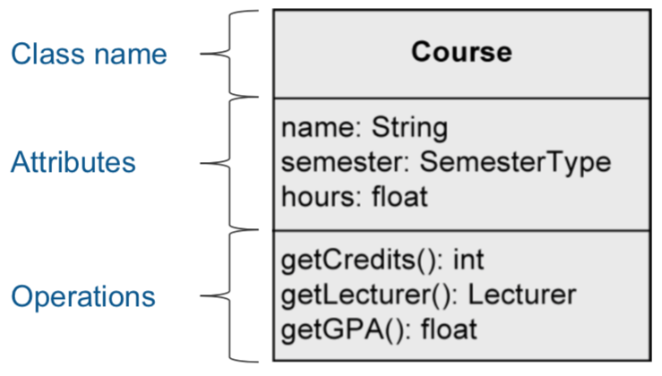
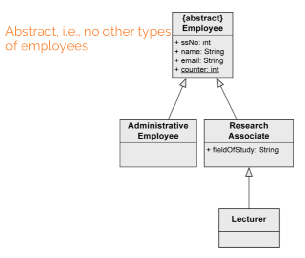
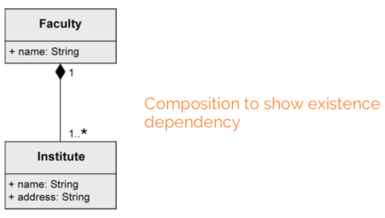
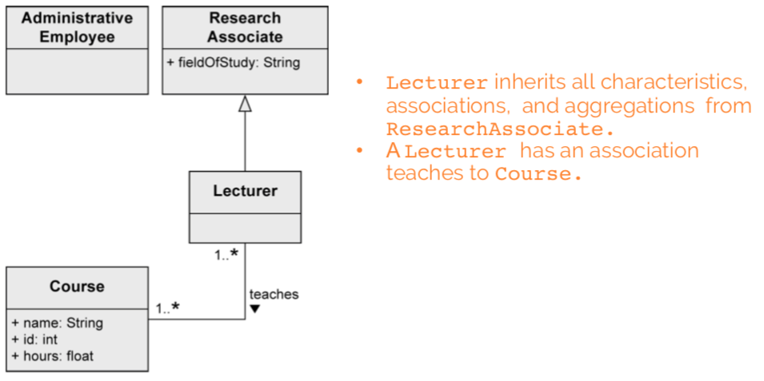

a construction plan for a set of similar objects of a system

Visibility: who is permitted to access the attribute
+ public, everybody
- private, only the object itself
# protected, class itself and subclasses
~ package, classes that are in the same package
/ means that attribute value is derived from other attributes
Type:
Multiplicity: number of values an attribute may contain (as [min..max], max can be * meaning no limit)
= Default: the default value that's used if the user doesn't explicitly set a value
properties:
[readOnly] - value can't be changed
[unique] - no duplicates allowed
[non-unique] - duplicates allowed
[ordered] - fixed order of values
[unordered] - no fixed order of values

Similar to attributes.
parameter:
in: input parameter (value is expected)
out: output parameter (adopts a new value after execution of operation)
inout: combined input/output

type: type of return value
Class variable (static): defined only once per class, shared by all instances
Class operation (static): can be used without creating an instance
To distinguish class variables/operations, underline them.
Connects instances of two classes with one another.

Properties:
xor constraint: cannot be associated with both at the same time
in Java:
class Professor {...}
class Student {
public Professor[] lecturer;
}
More than two objects involved in the relationship, no navigation directions.

Assign attributes to relationship between classes instead of to a class.

Needed for n:m associations.
Association class vs regular class:
Can be unique or non-unique.
Shows that class is part of another class.
Properties:
expresses weak belonging of the parts to a whole (parts also exist independently of the whole). one element can be part of multiple other elements at the same time.
Example:
existence dependency between composite object and its parts. one part can be contained in max one composite object at a point in time. if the composite object is deleted, so are its parts.
A Tire can exist without a Car. A Tire belongs to max one Car:

stuff from a superclass is passed to its subclass (attributes, operations, associations, aggregations)
every instance of a subclass is simultaneously an indirect instance of the superclass. subclass inherits all characteristics except private ones. generalizations are transitive. a class may have multiple superclasses/subclasses.

abstract class ensures that there are no direct instances of the superclass.
nouns often indicate classes. adjectives indicate attribute values. verbs indicate operations.
in general, tend towards having deep classes. push complexity as low as possible in the class diagram hierarchy.
focus on:
getter and setter methods)
generalization: "there is difference between research and administrative employees. some research associates hold courses, so they are lecturers."

composition: "a university consists of multiple faculties which are composed of various institutes."

binary association: "each faculty is led by a dean, who is an employee of the university"

shared aggregation: "research associates are assigned to at least one institute"

association class: "research associates can be involved in projects for a certain number of hours"

generalization: "some research associates hold courses. then they are called lecturers."
